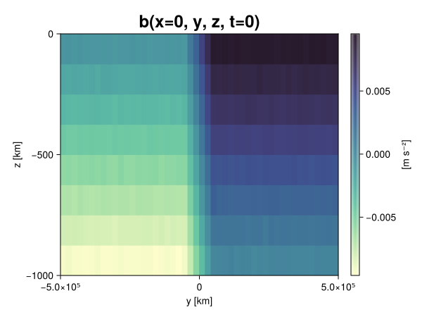
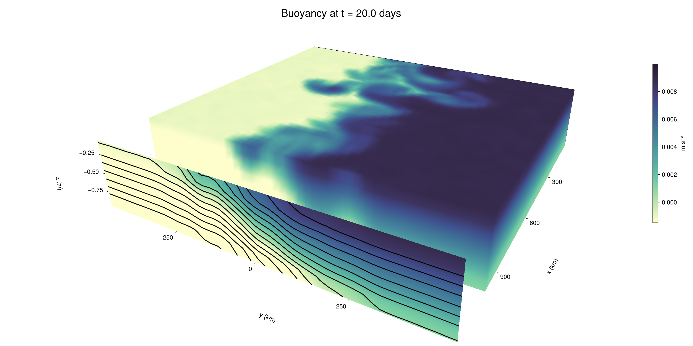

Baroclinic adjustment
In this example, we simulate the evolution and equilibration of a baroclinically unstable front.
Install dependencies
First let's make sure we have all required packages installed.
using Pkg
pkg"add Oceananigans, CairoMakie"using Oceananigans
using Oceananigans.UnitsGrid
We use a three-dimensional channel that is periodic in the x direction:
Lx = 1000kilometers # east-west extent [m]
Ly = 1000kilometers # north-south extent [m]
Lz = 1kilometers # depth [m]
grid = RectilinearGrid(size = (48, 48, 8),
x = (0, Lx),
y = (-Ly/2, Ly/2),
z = (-Lz, 0),
topology = (Periodic, Bounded, Bounded))48×48×8 RectilinearGrid{Float64, Periodic, Bounded, Bounded} on CPU with 3×3×3 halo
├── Periodic x ∈ [0.0, 1.0e6) regularly spaced with Δx=20833.3
├── Bounded y ∈ [-500000.0, 500000.0] regularly spaced with Δy=20833.3
└── Bounded z ∈ [-1000.0, 0.0] regularly spaced with Δz=125.0Model
We built a HydrostaticFreeSurfaceModel with an ImplicitFreeSurface solver. Regarding Coriolis, we use a beta-plane centered at 45° South.
model = HydrostaticFreeSurfaceModel(; grid,
coriolis = BetaPlane(latitude = -45),
buoyancy = BuoyancyTracer(),
tracers = :b,
momentum_advection = WENO(),
tracer_advection = WENO())HydrostaticFreeSurfaceModel{CPU, RectilinearGrid}(time = 0 seconds, iteration = 0)
├── grid: 48×48×8 RectilinearGrid{Float64, Periodic, Bounded, Bounded} on CPU with 3×3×3 halo
├── timestepper: QuasiAdamsBashforth2TimeStepper
├── tracers: b
├── closure: Nothing
├── buoyancy: BuoyancyTracer with ĝ = NegativeZDirection()
├── free surface: ImplicitFreeSurface with gravitational acceleration 9.80665 m s⁻²
│ └── solver: FFTImplicitFreeSurfaceSolver
├── advection scheme:
│ ├── momentum: WENO reconstruction order 5
│ └── b: WENO reconstruction order 5
└── coriolis: BetaPlane{Float64}We start our simulation from rest with a baroclinically unstable buoyancy distribution. We use ramp(y, Δy), defined below, to specify a front with width Δy and horizontal buoyancy gradient M². We impose the front on top of a vertical buoyancy gradient N² and a bit of noise.
"""
ramp(y, Δy)
Linear ramp from 0 to 1 between -Δy/2 and +Δy/2.
For example:
```
y < -Δy/2 => ramp = 0
-Δy/2 < y < -Δy/2 => ramp = y / Δy
y > Δy/2 => ramp = 1
```
"""
ramp(y, Δy) = min(max(0, y/Δy + 1/2), 1)
N² = 1e-5 # [s⁻²] buoyancy frequency / stratification
M² = 1e-7 # [s⁻²] horizontal buoyancy gradient
Δy = 100kilometers # width of the region of the front
Δb = Δy * M² # buoyancy jump associated with the front
ϵb = 1e-2 * Δb # noise amplitude
bᵢ(x, y, z) = N² * z + Δb * ramp(y, Δy) + ϵb * randn()
set!(model, b=bᵢ)Let's visualize the initial buoyancy distribution.
using CairoMakie
# Build coordinates with units of kilometers
x, y, z = 1e-3 .* nodes(grid, (Center(), Center(), Center()))
b = model.tracers.b
fig, ax, hm = heatmap(view(b, 1, :, :),
colormap = :deep,
axis = (xlabel = "y [km]",
ylabel = "z [km]",
title = "b(x=0, y, z, t=0)",
titlesize = 24))
Colorbar(fig[1, 2], hm, label = "[m s⁻²]")
fig
Simulation
Now let's build a Simulation.
simulation = Simulation(model, Δt=20minutes, stop_time=20days)Simulation of HydrostaticFreeSurfaceModel{CPU, RectilinearGrid}(time = 0 seconds, iteration = 0)
├── Next time step: 20 minutes
├── Elapsed wall time: 0 seconds
├── Wall time per iteration: NaN days
├── Stop time: 20 days
├── Stop iteration : Inf
├── Wall time limit: Inf
├── Callbacks: OrderedDict with 4 entries:
│ ├── stop_time_exceeded => Callback of stop_time_exceeded on IterationInterval(1)
│ ├── stop_iteration_exceeded => Callback of stop_iteration_exceeded on IterationInterval(1)
│ ├── wall_time_limit_exceeded => Callback of wall_time_limit_exceeded on IterationInterval(1)
│ └── nan_checker => Callback of NaNChecker for u on IterationInterval(100)
├── Output writers: OrderedDict with no entries
└── Diagnostics: OrderedDict with no entriesWe add a TimeStepWizard callback to adapt the simulation's time-step,
conjure_time_step_wizard!(simulation, IterationInterval(20), cfl=0.2, max_Δt=20minutes)Also, we add a callback to print a message about how the simulation is going,
using Printf
wall_clock = Ref(time_ns())
function print_progress(sim)
u, v, w = model.velocities
progress = 100 * (time(sim) / sim.stop_time)
elapsed = (time_ns() - wall_clock[]) / 1e9
@printf("[%05.2f%%] i: %d, t: %s, wall time: %s, max(u): (%6.3e, %6.3e, %6.3e) m/s, next Δt: %s\n",
progress, iteration(sim), prettytime(sim), prettytime(elapsed),
maximum(abs, u), maximum(abs, v), maximum(abs, w), prettytime(sim.Δt))
wall_clock[] = time_ns()
return nothing
end
add_callback!(simulation, print_progress, IterationInterval(100))Diagnostics/Output
Here, we save the buoyancy, $b$, at the edges of our domain as well as the zonal ($x$) average of buoyancy.
u, v, w = model.velocities
ζ = ∂x(v) - ∂y(u)
B = Average(b, dims=1)
U = Average(u, dims=1)
V = Average(v, dims=1)
filename = "baroclinic_adjustment"
save_fields_interval = 0.5day
slicers = (east = (grid.Nx, :, :),
north = (:, grid.Ny, :),
bottom = (:, :, 1),
top = (:, :, grid.Nz))
for side in keys(slicers)
indices = slicers[side]
simulation.output_writers[side] = JLD2OutputWriter(model, (; b, ζ);
filename = filename * "_$(side)_slice",
schedule = TimeInterval(save_fields_interval),
overwrite_existing = true,
indices)
end
simulation.output_writers[:zonal] = JLD2OutputWriter(model, (; b=B, u=U, v=V);
filename = filename * "_zonal_average",
schedule = TimeInterval(save_fields_interval),
overwrite_existing = true)JLD2OutputWriter scheduled on TimeInterval(12 hours):
├── filepath: baroclinic_adjustment_zonal_average.jld2
├── 3 outputs: (b, u, v)
├── array type: Array{Float64}
├── including: [:grid, :coriolis, :buoyancy, :closure]
├── file_splitting: NoFileSplitting
└── file size: 31.6 KiBNow we're ready to run.
@info "Running the simulation..."
run!(simulation)
@info "Simulation completed in " * prettytime(simulation.run_wall_time)[ Info: Running the simulation...
[ Info: Initializing simulation...
[00.00%] i: 0, t: 0 seconds, wall time: 29.070 seconds, max(u): (0.000e+00, 0.000e+00, 0.000e+00) m/s, next Δt: 20 minutes
[ Info: ... simulation initialization complete (27.774 seconds)
[ Info: Executing initial time step...
[ Info: ... initial time step complete (18.255 seconds).
[06.94%] i: 100, t: 1.389 days, wall time: 37.472 seconds, max(u): (1.259e-01, 1.194e-01, 1.599e-03) m/s, next Δt: 20 minutes
[13.89%] i: 200, t: 2.778 days, wall time: 909.075 ms, max(u): (2.238e-01, 1.747e-01, 1.748e-03) m/s, next Δt: 20 minutes
[20.83%] i: 300, t: 4.167 days, wall time: 955.603 ms, max(u): (2.925e-01, 2.334e-01, 1.675e-03) m/s, next Δt: 20 minutes
[27.78%] i: 400, t: 5.556 days, wall time: 845.037 ms, max(u): (3.748e-01, 3.213e-01, 1.699e-03) m/s, next Δt: 20 minutes
[34.72%] i: 500, t: 6.944 days, wall time: 867.214 ms, max(u): (4.554e-01, 4.203e-01, 1.876e-03) m/s, next Δt: 20 minutes
[41.67%] i: 600, t: 8.333 days, wall time: 880.724 ms, max(u): (5.596e-01, 6.605e-01, 2.041e-03) m/s, next Δt: 20 minutes
[48.61%] i: 700, t: 9.722 days, wall time: 930.891 ms, max(u): (7.594e-01, 9.723e-01, 2.863e-03) m/s, next Δt: 20 minutes
[55.56%] i: 800, t: 11.111 days, wall time: 985.505 ms, max(u): (1.119e+00, 1.219e+00, 4.139e-03) m/s, next Δt: 20 minutes
[62.50%] i: 900, t: 12.500 days, wall time: 863.763 ms, max(u): (1.333e+00, 1.210e+00, 4.876e-03) m/s, next Δt: 20 minutes
[69.44%] i: 1000, t: 13.889 days, wall time: 965.112 ms, max(u): (1.335e+00, 1.334e+00, 4.563e-03) m/s, next Δt: 20 minutes
[76.39%] i: 1100, t: 15.278 days, wall time: 997.250 ms, max(u): (1.335e+00, 1.455e+00, 5.041e-03) m/s, next Δt: 20 minutes
[83.33%] i: 1200, t: 16.667 days, wall time: 930.125 ms, max(u): (1.425e+00, 1.305e+00, 3.199e-03) m/s, next Δt: 20 minutes
[90.28%] i: 1300, t: 18.056 days, wall time: 944.659 ms, max(u): (1.490e+00, 1.310e+00, 4.019e-03) m/s, next Δt: 20 minutes
[97.22%] i: 1400, t: 19.444 days, wall time: 862.421 ms, max(u): (1.573e+00, 1.214e+00, 3.473e-03) m/s, next Δt: 20 minutes
[ Info: Simulation is stopping after running for 1.044 minutes.
[ Info: Simulation time 20 days equals or exceeds stop time 20 days.
[ Info: Simulation completed in 1.044 minutes
Visualization
All that's left is to make a pretty movie. Actually, we make two visualizations here. First, we illustrate how to make a 3D visualization with Makie's Axis3 and Makie.surface. Then we make a movie in 2D. We use CairoMakie in this example, but note that using GLMakie is more convenient on a system with OpenGL, as figures will be displayed on the screen.
using CairoMakieThree-dimensional visualization
We load the saved buoyancy output on the top, north, and east surface as FieldTimeSerieses.
filename = "baroclinic_adjustment"
sides = keys(slicers)
slice_filenames = NamedTuple(side => filename * "_$(side)_slice.jld2" for side in sides)
b_timeserieses = (east = FieldTimeSeries(slice_filenames.east, "b"),
north = FieldTimeSeries(slice_filenames.north, "b"),
top = FieldTimeSeries(slice_filenames.top, "b"))
B_timeseries = FieldTimeSeries(filename * "_zonal_average.jld2", "b")
times = B_timeseries.times
grid = B_timeseries.grid48×48×8 RectilinearGrid{Float64, Periodic, Bounded, Bounded} on CPU with 3×3×3 halo
├── Periodic x ∈ [0.0, 1.0e6) regularly spaced with Δx=20833.3
├── Bounded y ∈ [-500000.0, 500000.0] regularly spaced with Δy=20833.3
└── Bounded z ∈ [-1000.0, 0.0] regularly spaced with Δz=125.0We build the coordinates. We rescale horizontal coordinates to kilometers.
xb, yb, zb = nodes(b_timeserieses.east)
xb = xb ./ 1e3 # convert m -> km
yb = yb ./ 1e3 # convert m -> km
Nx, Ny, Nz = size(grid)
x_xz = repeat(x, 1, Nz)
y_xz_north = y[end] * ones(Nx, Nz)
z_xz = repeat(reshape(z, 1, Nz), Nx, 1)
x_yz_east = x[end] * ones(Ny, Nz)
y_yz = repeat(y, 1, Nz)
z_yz = repeat(reshape(z, 1, Nz), grid.Ny, 1)
x_xy = x
y_xy = y
z_xy_top = z[end] * ones(grid.Nx, grid.Ny)Then we create a 3D axis. We use zonal_slice_displacement to control where the plot of the instantaneous zonal average flow is located.
fig = Figure(size = (1600, 800))
zonal_slice_displacement = 1.2
ax = Axis3(fig[2, 1],
aspect=(1, 1, 1/5),
xlabel = "x (km)",
ylabel = "y (km)",
zlabel = "z (m)",
xlabeloffset = 100,
ylabeloffset = 100,
zlabeloffset = 100,
limits = ((x[1], zonal_slice_displacement * x[end]), (y[1], y[end]), (z[1], z[end])),
elevation = 0.45,
azimuth = 6.8,
xspinesvisible = false,
zgridvisible = false,
protrusions = 40,
perspectiveness = 0.7)Axis3()We use data from the final savepoint for the 3D plot. Note that this plot can easily be animated by using Makie's Observable. To dive into Observables, check out Makie.jl's Documentation.
n = length(times)41Now let's make a 3D plot of the buoyancy and in front of it we'll use the zonally-averaged output to plot the instantaneous zonal-average of the buoyancy.
b_slices = (east = interior(b_timeserieses.east[n], 1, :, :),
north = interior(b_timeserieses.north[n], :, 1, :),
top = interior(b_timeserieses.top[n], :, :, 1))
# Zonally-averaged buoyancy
B = interior(B_timeseries[n], 1, :, :)
clims = 1.1 .* extrema(b_timeserieses.top[n][:])
kwargs = (colorrange=clims, colormap=:deep, shading=NoShading)
surface!(ax, x_yz_east, y_yz, z_yz; color = b_slices.east, kwargs...)
surface!(ax, x_xz, y_xz_north, z_xz; color = b_slices.north, kwargs...)
surface!(ax, x_xy, y_xy, z_xy_top; color = b_slices.top, kwargs...)
sf = surface!(ax, zonal_slice_displacement .* x_yz_east, y_yz, z_yz; color = B, kwargs...)
contour!(ax, y, z, B; transformation = (:yz, zonal_slice_displacement * x[end]),
levels = 15, linewidth = 2, color = :black)
Colorbar(fig[2, 2], sf, label = "m s⁻²", height = Relative(0.4), tellheight=false)
title = "Buoyancy at t = " * string(round(times[n] / day, digits=1)) * " days"
fig[1, 1:2] = Label(fig, title; fontsize = 24, tellwidth = false, padding = (0, 0, -120, 0))
rowgap!(fig.layout, 1, Relative(-0.2))
colgap!(fig.layout, 1, Relative(-0.1))
save("baroclinic_adjustment_3d.png", fig)
Two-dimensional movie
We make a 2D movie that shows buoyancy $b$ and vertical vorticity $ζ$ at the surface, as well as the zonally-averaged zonal and meridional velocities $U$ and $V$ in the $(y, z)$ plane. First we load the FieldTimeSeries and extract the additional coordinates we'll need for plotting
ζ_timeseries = FieldTimeSeries(slice_filenames.top, "ζ")
U_timeseries = FieldTimeSeries(filename * "_zonal_average.jld2", "u")
B_timeseries = FieldTimeSeries(filename * "_zonal_average.jld2", "b")
V_timeseries = FieldTimeSeries(filename * "_zonal_average.jld2", "v")
xζ, yζ, zζ = nodes(ζ_timeseries)
yv = ynodes(V_timeseries)
xζ = xζ ./ 1e3 # convert m -> km
yζ = yζ ./ 1e3 # convert m -> km
yv = yv ./ 1e3 # convert m -> km49-element Vector{Float64}:
-500.0
-479.1666666666667
-458.3333333333333
-437.5
-416.6666666666667
-395.8333333333333
-375.0
-354.1666666666667
-333.3333333333333
-312.5
-291.6666666666667
-270.8333333333333
-250.0
-229.16666666666666
-208.33333333333334
-187.5
-166.66666666666666
-145.83333333333334
-125.0
-104.16666666666667
-83.33333333333333
-62.5
-41.666666666666664
-20.833333333333332
0.0
20.833333333333332
41.666666666666664
62.5
83.33333333333333
104.16666666666667
125.0
145.83333333333334
166.66666666666666
187.5
208.33333333333334
229.16666666666666
250.0
270.8333333333333
291.6666666666667
312.5
333.3333333333333
354.1666666666667
375.0
395.8333333333333
416.6666666666667
437.5
458.3333333333333
479.1666666666667
500.0Next, we set up a plot with 4 panels. The top panels are large and square, while the bottom panels get a reduced aspect ratio through rowsize!.
set_theme!(Theme(fontsize=24))
fig = Figure(size=(1800, 1000))
axb = Axis(fig[1, 2], xlabel="x (km)", ylabel="y (km)", aspect=1)
axζ = Axis(fig[1, 3], xlabel="x (km)", ylabel="y (km)", aspect=1, yaxisposition=:right)
axu = Axis(fig[2, 2], xlabel="y (km)", ylabel="z (m)")
axv = Axis(fig[2, 3], xlabel="y (km)", ylabel="z (m)", yaxisposition=:right)
rowsize!(fig.layout, 2, Relative(0.3))To prepare a plot for animation, we index the timeseries with an Observable,
n = Observable(1)
b_top = @lift interior(b_timeserieses.top[$n], :, :, 1)
ζ_top = @lift interior(ζ_timeseries[$n], :, :, 1)
U = @lift interior(U_timeseries[$n], 1, :, :)
V = @lift interior(V_timeseries[$n], 1, :, :)
B = @lift interior(B_timeseries[$n], 1, :, :)Observable([-0.009359290348820873 -0.00815353125055027 -0.006893462647034655 -0.005635297052847499 -0.0043516609231512545 -0.0031156927921486377 -0.0018854417925060023 -0.000609765999097287; -0.00936991106920509 -0.008129584136639284 -0.006873363698437098 -0.0056286883493644295 -0.004355385661616084 -0.003124428852920994 -0.0018745849929394 -0.000628291309395886; -0.009386993224077623 -0.008142054995354048 -0.006892369233068071 -0.005611026092797125 -0.004383036450328045 -0.003131242081327909 -0.0018774351674089235 -0.0006284251270507745; -0.009337697576155017 -0.008119612757420321 -0.006871543188128944 -0.005640296735858624 -0.004370798698318691 -0.003121025895933605 -0.0018695995716364391 -0.0006247354195203105; -0.00939850130468322 -0.008109735782868645 -0.0068774734471750395 -0.005648968429792195 -0.004380906369796717 -0.003114104902151516 -0.0018985136523063044 -0.0006362218709967824; -0.009383146265453722 -0.008088551045845839 -0.006883514623962549 -0.005644523243389137 -0.004393303056730056 -0.003109390649166189 -0.0018605995143079884 -0.00060927599354007; -0.00935197464512978 -0.008127268578551027 -0.0068983166192008736 -0.005640090057218501 -0.00439315315397177 -0.003121334404813188 -0.0018703570749490145 -0.0006177054046888358; -0.009394997884504099 -0.008142442314770732 -0.006880735989187811 -0.005605091025610944 -0.004372977957369791 -0.0031435738321977085 -0.001874727320979656 -0.0006291921568037708; -0.009387731150878091 -0.008141791920536181 -0.00687200416075402 -0.0056247124262412225 -0.004388375318269206 -0.003108338346393872 -0.0018603919987908515 -0.0006086947388991347; -0.0093607896175748 -0.008128341033923585 -0.006869743956428105 -0.005660664532429949 -0.00437923902722939 -0.0031185784706663448 -0.001852269404712007 -0.0006175341702485917; -0.009353558259591924 -0.008114945610762854 -0.006871922488495823 -0.005630170534602626 -0.004373609296110458 -0.0031219832756305653 -0.0018958392806310905 -0.000625985887029541; -0.009356062081183567 -0.008131675874661176 -0.006867129126464584 -0.005625958145447921 -0.004363434412787301 -0.003124752141763824 -0.0018684275753237554 -0.0006187629944677656; -0.009365823351236301 -0.008117320637370794 -0.006888946407049473 -0.005660593261152903 -0.004375003195118077 -0.003125815228253046 -0.001868812734473062 -0.0006197136814515496; -0.00937098272730407 -0.008141668972178205 -0.006907047418623147 -0.005620334710852828 -0.004380583904126421 -0.0031449406527486964 -0.0018735608876110285 -0.0006168749761925013; -0.009375157848173105 -0.008139287177041162 -0.006867418501630833 -0.0056495730919812505 -0.0043878082558114415 -0.0030928041085123846 -0.0018668247342472487 -0.0006295382490451245; -0.009405477072926133 -0.008115090175667812 -0.006864668145647671 -0.005639931846324035 -0.004348397794637329 -0.0031192597180763355 -0.0018554907807904859 -0.0006234519361432517; -0.009373157616380733 -0.008109249625282719 -0.0068773976459599396 -0.0056434661983830224 -0.0043946855282985245 -0.003134614556568711 -0.00185433729533845 -0.0006154713252384428; -0.009382226166565066 -0.008111690171004028 -0.006909844396913015 -0.005630666922253356 -0.004386220398093166 -0.0031183084527642746 -0.001875944999246078 -0.0006460605667172488; -0.009385974282505602 -0.008139636023372676 -0.006866675288058514 -0.005631175872024465 -0.00436798920392223 -0.0031042115931454116 -0.0018675631643872744 -0.0006148472952230828; -0.009367106523428 -0.008127054274480147 -0.006877361628708371 -0.005615831752836036 -0.0043878831912598035 -0.0031385133410286883 -0.0018888666372944736 -0.0006200329932163291; -0.00937913413765307 -0.008112957263495273 -0.006865908107205468 -0.005645462004639637 -0.0043714367489214884 -0.003128170290984372 -0.0018499646935375633 -0.0006117353903465082; -0.009355701341710933 -0.0081172958295573 -0.006886726055962251 -0.005635923431916256 -0.0043816799618447595 -0.0031050785367168917 -0.0018725959626648134 -0.0006196554213732789; -0.0074910042969553725 -0.006252105211805362 -0.00499252383443221 -0.0037664989571143605 -0.002488290876458667 -0.0012701558561241447 3.894508254886802e-6 0.0012444721323441744; -0.005439209191554533 -0.004184017787099392 -0.0029385080142071383 -0.0016728889991049966 -0.00041362498710240244 0.0008316498701422514 0.0020574768686278683 0.0033268693525938067; -0.003336213902551123 -0.0020680564000564046 -0.0008397836285426776 0.00039266040164481606 0.0016613190144633817 0.0029087664769230754 0.004152999754358307 0.005416665319917431; -0.0012377026850381094 -2.7832176547360567e-5 0.001261271976861578 0.002494728196670934 0.00375476970388615 0.005015336928237477 0.006237565215195399 0.007487698798878899; 0.0006203819155984827 0.0018539652644029797 0.0031463150025390837 0.004373092178223787 0.0056443507673175795 0.006876003113063183 0.008096406016534587 0.00938610223588359; 0.0006294287326582072 0.0018748632908238763 0.003176533566904432 0.004390229548604205 0.005618947268610339 0.006897474167511298 0.008132038004386081 0.009356488363942083; 0.0006313861160713116 0.0018732386474048588 0.00312914182730614 0.00437105701723683 0.005617023639785257 0.006885750975619625 0.008133238967014284 0.00938562360761522; 0.0006447636065651982 0.0018664595439567848 0.003111975951176009 0.004362810522048539 0.005620304733943939 0.006877212696984492 0.008118226880985327 0.009374004367101679; 0.000608315120264802 0.0018473744581315454 0.003138426111099162 0.0043603374031741015 0.0056403157439399365 0.006865169893475568 0.00810536894427308 0.00940092666215683; 0.0006003785601350872 0.0018855892858692872 0.0031275323455924042 0.0043797512535412655 0.005620446033979882 0.006878388017859778 0.008137509386237722 0.00938837814220579; 0.0006258128236752245 0.001887372277690805 0.0031401567966542385 0.0043649484905665 0.005627624317013619 0.006884609132057225 0.008118499676349472 0.009382291429458301; 0.0006152183580332909 0.0018893628957034388 0.003116430020610609 0.004376086674135547 0.005606558852120312 0.006869817884989464 0.008126241102507743 0.009366291442273958; 0.0006311098597118829 0.0019184296390027233 0.0031156546450082667 0.004374265187887672 0.005620158000289493 0.0068727023170012495 0.00812547653283764 0.009339352606586533; 0.0006347028842767538 0.0018798419478025857 0.003132630422945579 0.0043954988854015475 0.0056588976892834346 0.006899923219322801 0.008120890171077746 0.00936723504061217; 0.0006190807849036387 0.0018876838777371942 0.0031238544079887597 0.004340380604556624 0.005633112072356269 0.006870990548165232 0.008126226054708167 0.009395775105759126; 0.0006439906070571186 0.001868748402704269 0.0031173156782341124 0.004392366509961446 0.005598049473836453 0.006890006767010581 0.008120940522375499 0.009357510624247842; 0.0006335633017330283 0.0018594754871399638 0.0031098324503642132 0.0043638334617483185 0.0056407369956935835 0.006849323773098745 0.008104365336640247 0.009378413332592204; 0.0006404844149656009 0.0018579357014852722 0.0031179288406857244 0.0043895054221764285 0.005618960106703663 0.006874006869263691 0.008141418947389885 0.009358336342878694; 0.0006200334715156275 0.0018627174680210586 0.003127337379722518 0.004371435723755957 0.005619415035148741 0.006892667065180485 0.008102924321041044 0.009394869575683333; 0.0006434675686207042 0.0018820448803238668 0.0031388564998716516 0.004366956540380866 0.005622722812024056 0.0068718787209977135 0.0081418210651089 0.00938333756647297; 0.0006156000549078846 0.001842931296731308 0.0031245205549679145 0.0043721458688028595 0.005641529608386838 0.006869527027571216 0.00812254560752467 0.009397706941487659; 0.000616821960133814 0.0018727098364613778 0.0031320750423961836 0.0043848531150224015 0.005622974301955415 0.006856155098116612 0.00812685007967616 0.009361938516590892; 0.0006425061984345028 0.0018759866970154502 0.003118904471962735 0.004349300818901454 0.005603036621417024 0.006873571577659683 0.00814655742707919 0.009372918676082932; 0.0006082861022009421 0.001867529932574414 0.0031257251874491896 0.004347248103730765 0.005618705730367886 0.0068772568462450055 0.008119614295362563 0.009359914102023378; 0.0006597241706825241 0.0018988997258614323 0.003132798073604797 0.004377561554104752 0.005629043957859694 0.006891386902131151 0.008127025370998039 0.009348547496557605; 0.0006226936088117845 0.0018932424062812212 0.003146976257167465 0.004376179212286123 0.00560661964258597 0.006868838033653603 0.008133788572573868 0.0093724495106276])
and then build our plot:
hm = heatmap!(axb, xb, yb, b_top, colorrange=(0, Δb), colormap=:thermal)
Colorbar(fig[1, 1], hm, flipaxis=false, label="Surface b(x, y) (m s⁻²)")
hm = heatmap!(axζ, xζ, yζ, ζ_top, colorrange=(-5e-5, 5e-5), colormap=:balance)
Colorbar(fig[1, 4], hm, label="Surface ζ(x, y) (s⁻¹)")
hm = heatmap!(axu, yb, zb, U; colorrange=(-5e-1, 5e-1), colormap=:balance)
Colorbar(fig[2, 1], hm, flipaxis=false, label="Zonally-averaged U(y, z) (m s⁻¹)")
contour!(axu, yb, zb, B; levels=15, color=:black)
hm = heatmap!(axv, yv, zb, V; colorrange=(-1e-1, 1e-1), colormap=:balance)
Colorbar(fig[2, 4], hm, label="Zonally-averaged V(y, z) (m s⁻¹)")
contour!(axv, yb, zb, B; levels=15, color=:black)Finally, we're ready to record the movie.
frames = 1:length(times)
record(fig, filename * ".mp4", frames, framerate=8) do i
n[] = i
endThis page was generated using Literate.jl.